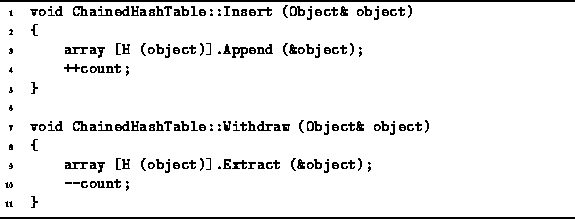
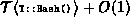
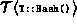
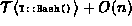

Data Structures and Algorithms
with Object-Oriented Design Patterns in C++
Data Structures and Algorithms
with Object-Oriented Design Patterns in C++
Program  gives the code for
inserting and removing items from a ChainedHashTable.
gives the code for
inserting and removing items from a ChainedHashTable.

Program: ChainedHashTable Class Insert and Withdraw Member Function Definitions
The implementations of the Insert and Withdraw functions are remarkably simple. For example, the Insert function first calls the hash function H to compute an array index which is used to select one of the linked lists. The Append member function provided by the LinkedList<T> class is used to add a pointer to the object to the selected linked list. The total running time for the Insert operation is , where  is the running time of the Object::Hash function. Notice that if the hash function runs in constant time, then so too does hash table insertion operation!
The Withdraw function is almost identical to the Insert function.
Instead of calling the Append,
it calls the linked list Extract function to remove the
specified object from the appropriate linked list.
The running time of Withdraw is determined by the time
of the Extract operation.
In Chapter this was shown to be O(n)
where n is the number of items in the linked list.
In the worst case, all of the items in the ChainedHashTable
have collided with each other and ended up in the same list.
I.e., in the worst case if there are n items in the container,
all n of them are in a single linked list.
In this case, the running time of the Withdraw operation
is .
 Copyright © 1997 by Bruno R. Preiss, P.Eng. All rights reserved.
Copyright © 1997 by Bruno R. Preiss, P.Eng. All rights reserved.